Excel-diagram a PowerPointban
Sablonból indulva a robotod Excel-adatból diagramot készít és diára illeszti: az első bemutatható irodai automatizmusod.
- a robotod Excel-adatokból diagramot készít, és beilleszti egy PowerPoint-diára;
- sablonból indultál ki: ez a leggyorsabb út működő automatizmushoz;
- van egy kézzelfogható eredményed, amit bárkinek meg tudsz mutatni.
A klasszikus irodai feladat
Egy ismétlődő riportban az Excel adataiból diagram kerül a prezentációba. Először a képekkel bemutatott sablonos utat nézzük meg; ha a sablon nincs a telepített verzióban, az alább leírt aktivitásokból is felépítheted. Ehhez helyi Excel és PowerPoint kell. A két eredeti munkafájlról készíts munkapéldányt Riport_adatok.xlsx és Riport_eredmeny.pptx néven a BPA_kurzus mappában.
Töltsd le a két munkafájlt, és tedd őket a BPA_kurzus mappádba:
- Indíts a Studio kezdőképernyőjéről: válaszd a More Templates lehetőséget.
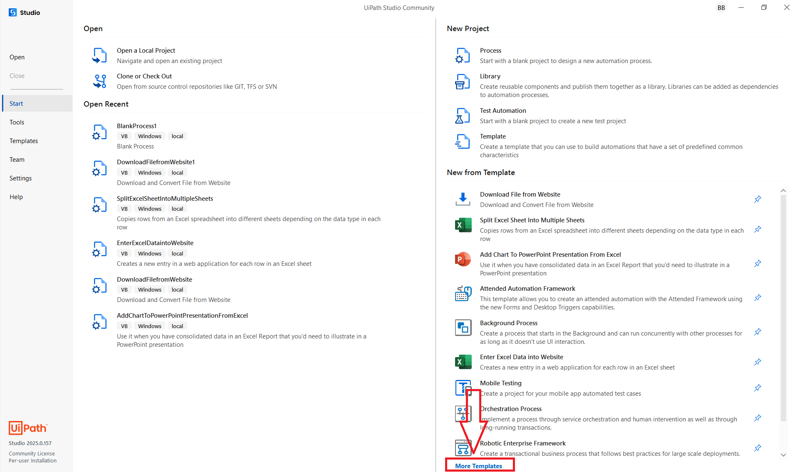
A Studio kezdőképernyője a More Templates lehetőséggel - A keresőbe írd: PowerPoint, és nyisd meg az Add Chart To PowerPoint Presentation From Excel sablont.
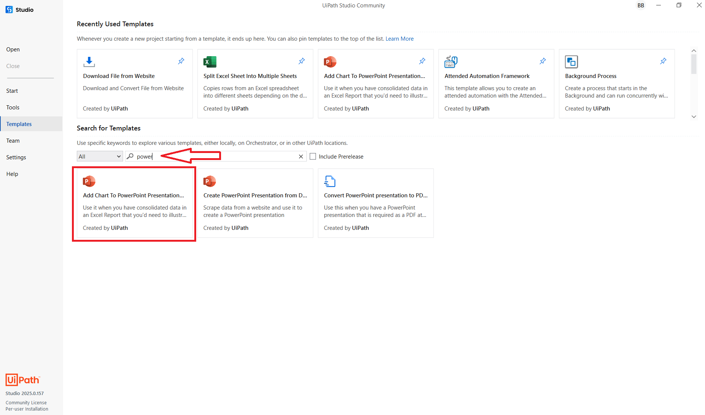
A sablonkereső a PowerPoint sablonnal - A sablon egy előre felépített munkafolyamatot ad: ezt igazítjuk a fájljainkra.
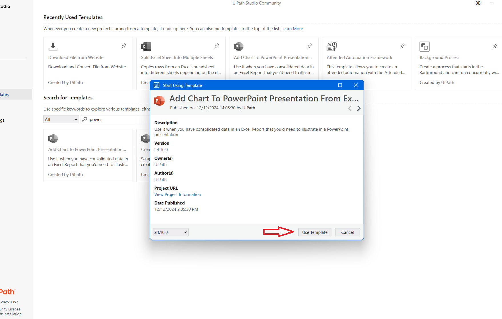
A sablon megnyitott munkafolyamata a tervezőben - Add meg az Excel-munkapéldány,
Riport_adatok.xlsxteljes útvonalát.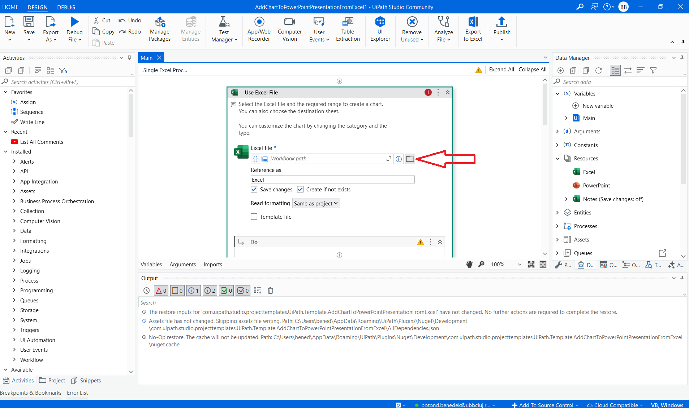
Az Excel-fájl helyének megadása a sablonban - A munkalap neve
us-500, a tábla tartományaA1:D244(243 adatsor). Elsőre válassz oszlopdiagramot, és csakA1:B13tartományt: State és Quantity, az első 12 rekord. Ez áttekinthető gyakorlódiagram; az ismétlődő államkódokat nem összesíti automatikusan.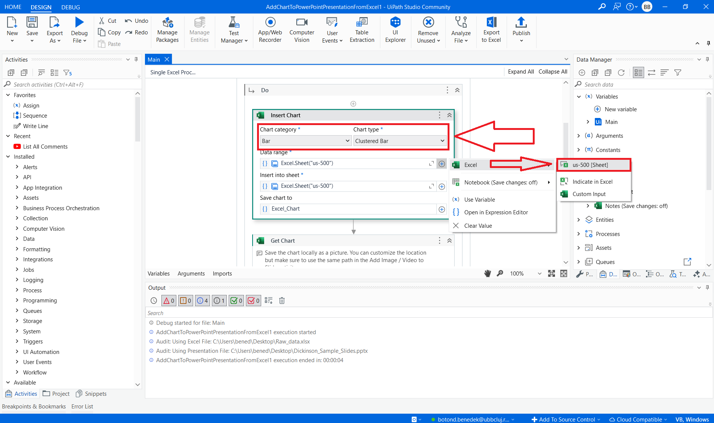
Diagramtípus és tartomány: teljes munkalap - A tartományt a munkalapon is kijelölheted: az Indicate in Excel gombbal magában az Excelben jelölöd ki a cellákat, és a Confirm gombbal hagyod jóvá.
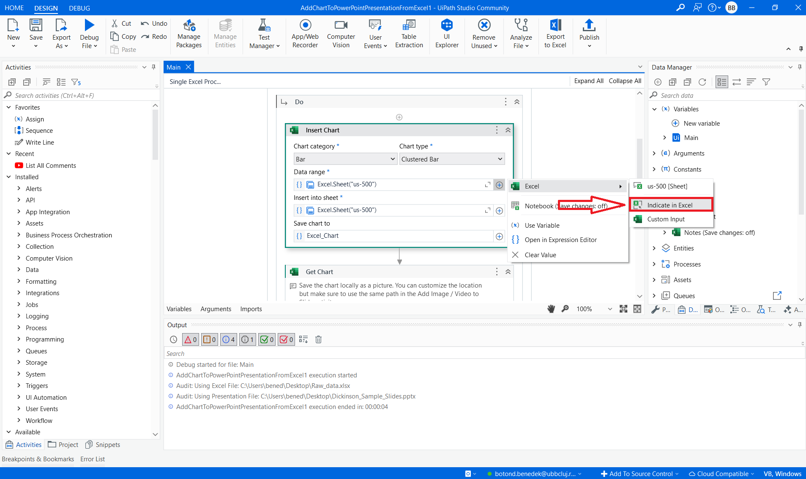
Tartomány kijelölése Indicate in Excel módban 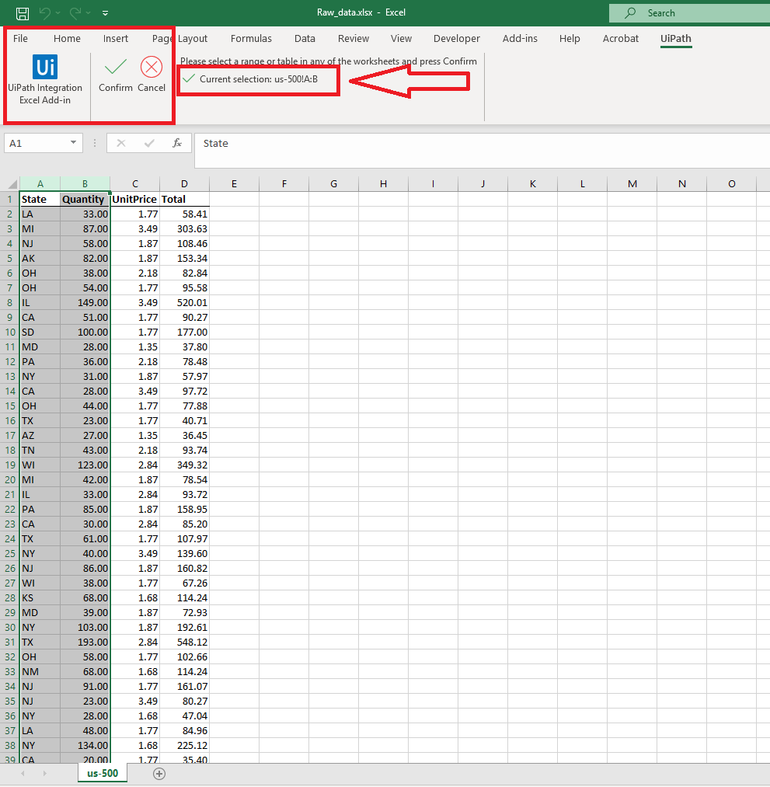
A kijelölés jóváhagyása az Excelben a Confirm gombbal - Add meg, melyik munkalapra kerüljön a diagram az Excelben.
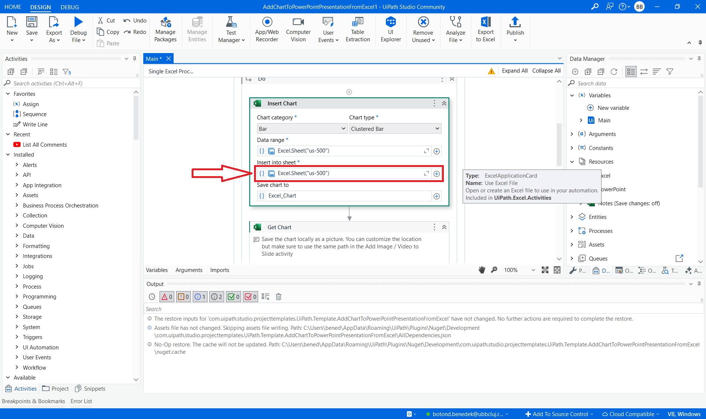
A diagram cél-munkalapjának kiválasztása - Add meg a PowerPoint-munkapéldány,
Riport_eredmeny.pptxteljes útvonalát.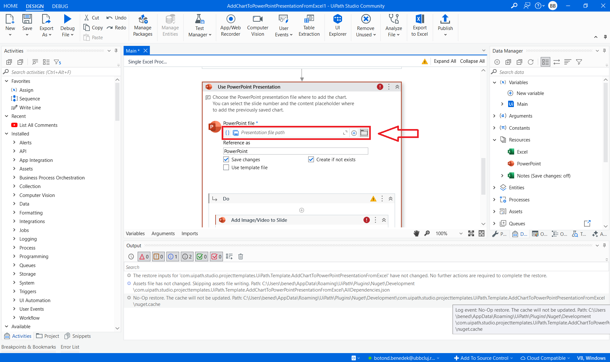
A PowerPoint-fájl helyének megadása - A mellékelt prezentáció 9 diát tartalmaz. A sablonban válassz nagy tartalom-helyőrzővel rendelkező diát, és a felkínált elemek közül jelöld ki annak tartalom-helyőrzőjét. Az elemek listáját a saját példányodban ellenőrizd; a GraphTitle szöveg címet jelöl, nem a diagram helyét.
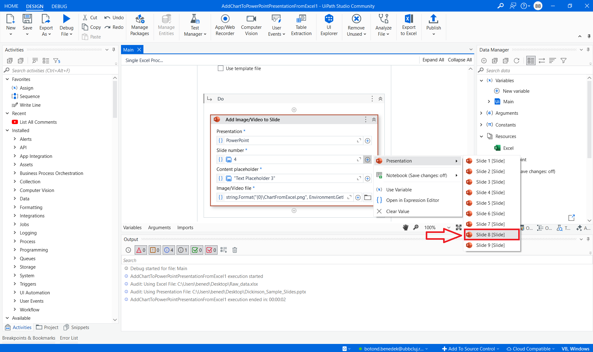
A cél-dia kiválasztása - Jelöld ki, a dián melyik helyőrző elemet cserélje a diagramra.
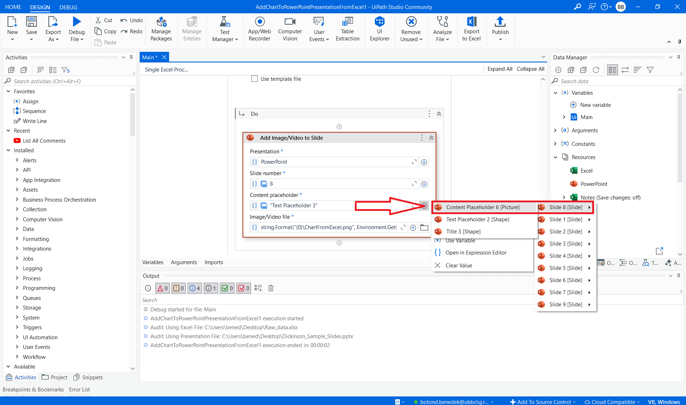
A lecserélendő diaelem kijelölése - Futtasd a folyamatot, és várd végig: a robot megnyitja az Excelt, elkészíti a diagramot, majd beteszi a diára.
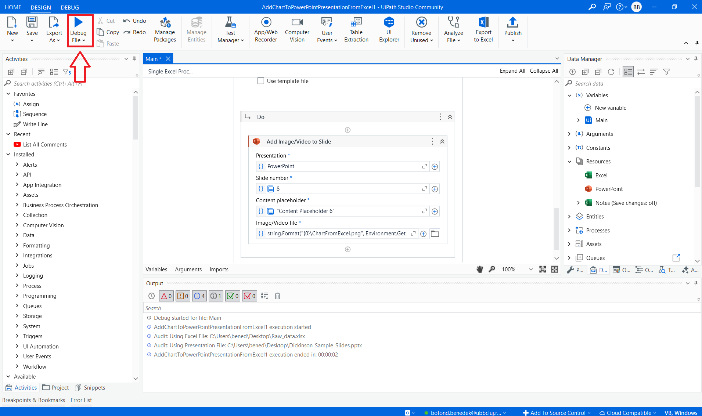
A folyamat futtatása - Ellenőrizd az Output panelen, hogy hibátlanul futott-e le.
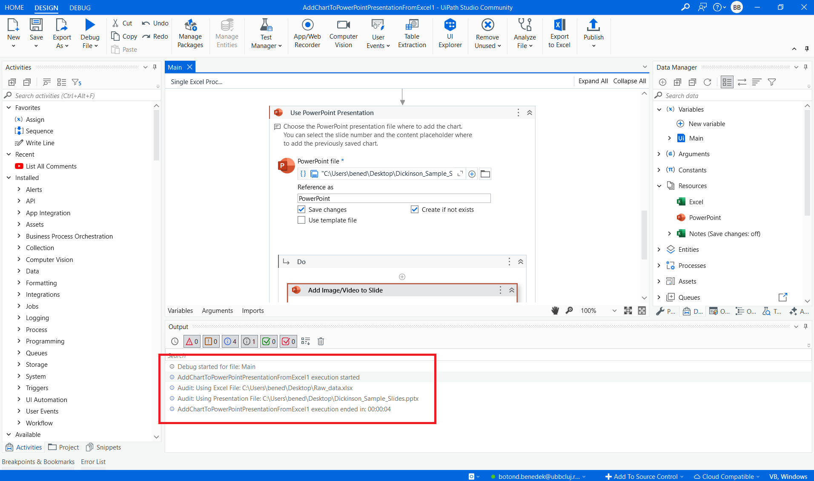
Hibamentes futás az Output panelen - Nyisd meg az Excel-fájlt: a diagramnak ott kell lennie a megadott lapon.
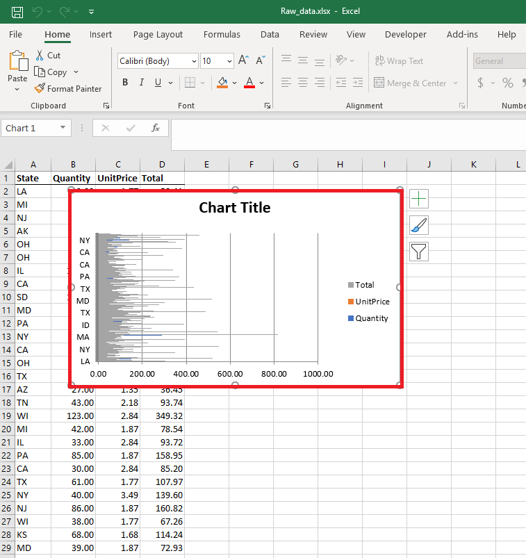
Az elkészült diagram az Excelben - Nyisd meg a PowerPointot is: a dián ott a friss diagram. Kész az első valódi irodai automatizmusod.
A PPT kijelölt diáján a kiválasztott Excel-tartományból készült diagram áll. A sablon helyőrzőt cserélhet; a sablon nélküli egyszerű változat beilleszti a diagramot, ezért ismétléshez tiszta munkapéldányt használj.
Ha mást látsz: a két leggyakoribb hiba: az Excel vagy a PPT nyitva maradt (zárd be, és futtasd újra), vagy elgépelt fájl-útvonal (másold be a teljes utat a fájlkezelőből).
A képek korábbi Studio-verziót mutatnak. A More Templates kínálata és a mezők neve változhat; ha a megnevezett sablont nem találod, használd a következő, sablon nélküli útvonalat. A két utat nem kell egymás után külön is elkészítened.
Útvonal sablon nélkül
- Hozz létre Windows + Visual Basic Process projektet
RiportRobotnéven. Manage Packages: telepítsd aUiPath.Excel.ActivitiesésUiPath.Presentations.Activitiescsomagot. - Add hozzá a Use Excel File aktivitást, fájlja a Riport_adatok.xlsx munkapéldány. A Reference as név legyen
Excel. A kártyán belül add hozzá az Insert Chart aktivitást: Data range → Excel → us-500 → Indicate in Excel → A1:B13; válaszd a fejléceket használó oszlopdiagramot. Insert into sheet:us-500. A Save chart to mezőben válaszd a Save for Later Use lehetőséget, neve legyendiagram. A beállításoknál a tartomány első oszlopa adja a kategóriákat. - Az Insert Chart után, még a Use Excel File belsejében add hozzá a Get Excel Chart aktivitást. Chart: az előző lépésben eltett
diagram(a mentett érték kiválasztásával vagy Open in Advanced Editor → diagram), Action: Copy to clipboard. - A Get Excel Chart után, még ugyanabban az Excel-kártyában adj hozzá Use PowerPoint Presentation aktivitást. Presentation file: Riport_eredmeny.pptx, Reference as:
PowerPoint. Ezen belül legyen Paste Item Into Slide. Presentation: PowerPoint, Slide number: 9. A munkapéldány 9. diájának elrendezését előbb állítsd PowerPointban Home → Layout → Title and Content értékre, és mentsd. A Content placeholder menüben válaszd e dia nagy tartalom-helyőrzőjét, ne a címét. A 9. dián a címet kézzel átírhatod „Az első 12 rekord mennyisége” szövegre. - Futtasd Ctrl+F5-tel. Ellenőrizd a diagram 12 oszlopát Excelben és a 9. dián. Ezután zárd be az Office-fájlokat. Új próbához készíts friss munkapéldányokat az eredetiekből: ez az egyszerű változat új diagramot adhat hozzá, nem garantálja a korábbi felülírását.
A tevékenységek hivatalos útmutatói: Insert Chart, Get Excel Chart, Paste Item Into Slide. A vágólapos lépések között ne másolj kézzel más adatot.
Készíts új munkapéldányokat, és változtasd a tartományt A1:B7-re: így az első hat rekordot mutatod meg. A melléklet nem negyedéves adatokat tartalmaz, ezért negyedéves összehasonlítást ebből nem állítunk elő. Ellenőrizd, hogy valóban hat oszlop jelenik meg.
- Nyitva maradt Excel vagy PowerPoint: a sablon nem fér hozzá a fájlhoz; minden futtatás előtt zárd be őket.
- OneDrive-os elérési út: ha a fájl felhőben van és nincs lent a gépen, a robot nem éri el; tedd a BPA_kurzus helyi mappába.
- Rossz helyőrzőt jelöltél ki a dián: a diagram máshova kerül; futtasd újra, és a 10. lépésben a nagy tartalom-helyőrzőt válaszd.